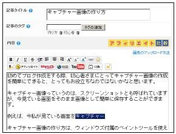

キャプチャー画像の作り方
キャプチャー画像は「スクリーンショット」とも呼ばれていますが、今見ている画面をそのまま画像として保存することができます。
例えば、今私が見ている画面をキャプチャーするとこんな感じになります。

このキャプチャー画像の作り方は、ウィンドウズ付属のペイントツールを使えば、コピペと同じ要領で簡単に作成することができます。
プリントスクリーンでキャプチャー画像の作成方法
キャプチャー画像の作り方としては、「 Print Screen 」ボタンで画面をキャプチャーして、「ペイント - 編集」の貼り付けボタンを押せば簡単にできあがります。
Print Screen ボタンはどこにあるのかというと、たぶん、あなたのキーボードの右上のすみっこの方にあるはずです。
「 Prt Sc 」となっている場合もあるかと思います。
私の場合、F12 の右側に配置されているようです。
この Print Screen ボタンは、押してみても何の反応もないので、「本当に大丈夫なんだろうか？」と不安な気持ちになってしまいます。
でも、パソコンの方でちゃんとコピーされているので大丈夫です。
画面をキャプチャーしたら、次にウィンドウズに付属しているペイントツールを起動します。
たぶん、「スタート - アクセサリ」あたりに入っていると思います。
起動したら、「編集 - 貼り付け」ボタンを押せば、キャプチャーした画像が貼り付けられるので、あとは縮小するなり、適当な大きさに切り取るなりして画像を加工すればできあがりです。
画像を保存する際は、bmp や jpg などいろいろありますが、jpg あたりがぶなんな選択かと思います。
bmp は画質が劣化しずらいと聞いたことがあるので、私は bmp で保存していますが、容量をけっこう食うみたいです。
サイト上で公開しているメールアドレスや販売者概要の個人情報など、ネット上であまり公開したくないような情報は、このキャプチャー画像で公開すれば検索でヒットしないので安心です。
ペイント画像の加工方法については、また別の記事でご紹介したいと思います。
- 無料画像のブログで使い方
ブログの画像を作るには、やっぱデジカメで写真をとってアップロードするっていうのが一番簡単かと思いますが、たいていの人は初心者というのが普通なんで、自分でとっても、逆光とかになってきたない画像しかとれな... - ブログにグラデーションな背景画像の作り方
ブログの背景画像をグラデーションなふいんきにしたい場合は、無料ソフトツールなどを使用しながらグラデーション素材を作成し、ＣＳＳで背景画像として組み込めば簡単にカスタマイズできるのではないかなと思います... - ブログのタイトルバナー画像の作り方
ブログ名やサイト名などブログの顔になるタイトルバナーですが、アイコンや画像を作成しておしゃれバナーを作成している人が多いようです。このブログでもいちおうはタイトルバナーをフッターに画像として作っている... - キャプチャー動画の作り方
キャプチャー動画の作り方は画像の場合と比べて、若干難しいところがありますが、言葉では伝えにくいメッセージは動画で伝えるのが一番かと思います。ネット上では動画をキャプチャーする無料ツールがいくつか公開さ... - キャプチャー画像をブログへ貼付方法
以前の記事でキャプチャー画像の作り方について書いていたのですが、今度はそのキャプチャーした画像の加工方法について調べてみたいと思います。さらに、画像をブログへ貼付する際の html タグは &... - ブログのアイコンバナーの作り方
ブログランキングや相互リンクなど、何かと必要になることが多いブログのアイコンバナーですが、今回はグーグル無料ツールの picasa を使用して、手作りバナーを作ってみました。結論からいうとアイコンバナ... - 写真集の作り方
最近は個人でも簡単に写真集を作成できる時代になりました。写真集の作り方といってもとっても簡単で、ネット上に写真をアップロードしたあと、レイアウトや文字などをあれこれして注文すれば、２週間後には製本され...